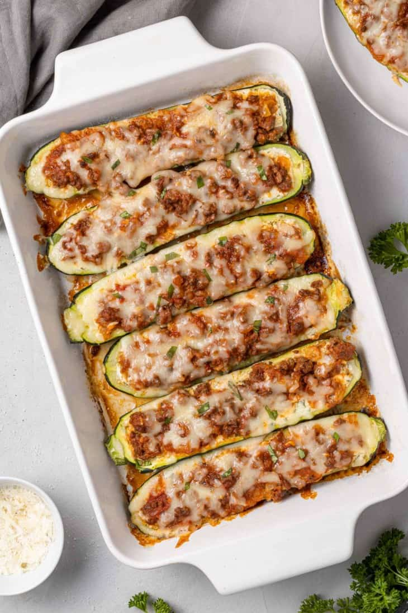

Zucchini Boats
Back to main page

Gluten-free lasagna zucchini boats are stuffed with all the goodness of lasagna but without all the heavy pasta. A healthy and delicious alternative!
This recipe is keto-friendly, as long as you choose marinara or spaghetti sauce that's carb-free. It's also gluten-free and it can easily be made into a vegetarian entree.
Ingredients:
- Zucchini
- Lean Ground Beef or Turkey
- Onions
- Salt and Pepper
- Minced Garlic
- Ricotta Cheese, Egg, Parmesan Cheese
- Mozzarella Cheese
Steps
- First off, prepare the zucchini squash. Slice them lengthwise, stem to stern. Scoop out the insides, leaving a quarter inch rim. Discard what you scoop out. It will be mostly seeds. Put them, cut side down, on a paper towel to drain while you get the “stuffing” ready.
- Brown the meat in a skillet with onions, seasoning with salt and pepper. Add garlic and sauté briefly. Stir in spaghetti sauce.
- Mix up the creamy ricotta stuffing. It's pretty much the same as what you find in lasagna: ricotta, egg, Parmesan, and herbs.
- Now you're ready to fill the boats. Divide the ricotta mixture evenly between the eight zucchini halves, spreading it out from end to end.
- Top that with the meaty sauce. Way easier than lasagna, right?
- Put the boats into a baking dish and bake until the zucchini is tender, about 35 minutes. Top with mozzarella, and bake for a few more minutes.
- Enjoy!
Back to main page